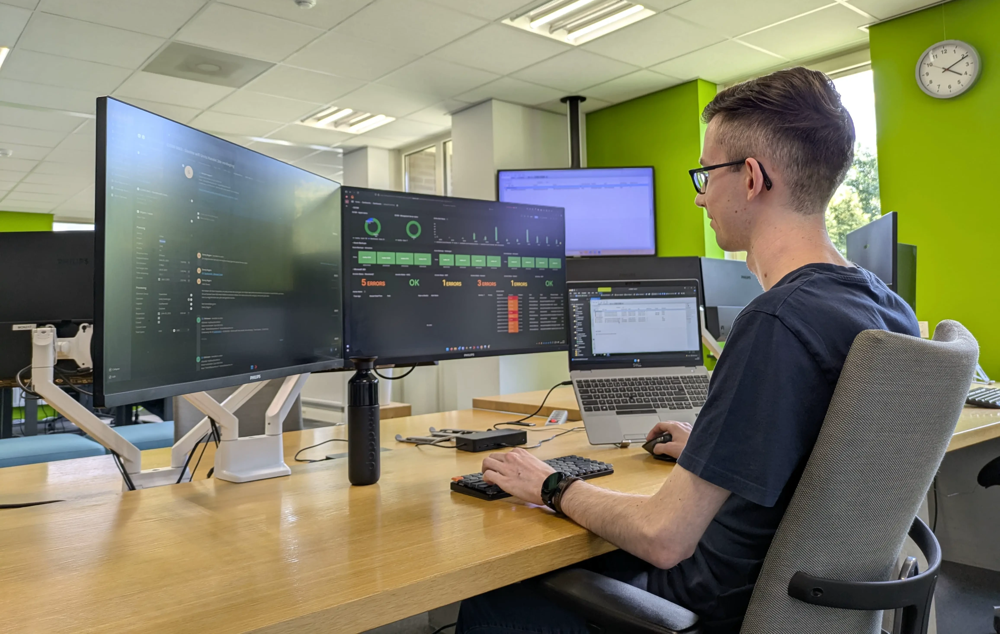

Jordy Hoebergen - Stage Advantive
In het kort
In het laatste jaar van de opleiding AD-ICT in de richting Infrastructuur bij het Fontys in Eindhoven heb ik stage gelopen bij Advantive. Advantive is een Microsoft Solutions Partner gevestigd in Weert.
Gedurende deze stage ben ik bezig geweest met een afstudeerproject, waarbij ik de operationele monitoring bij het Managed Services team heb verbeterd, door een hybride (maar centrale) monitoringsoplossing te realiseren.
Afstudeerproject
Voor mijn afstudeerstage ben ik werkzaam bij Advantive, een Microsoft Solutions Partner die organisaties ondersteunt bij hun digitale transformatie met behulp van Microsoft-technologieën. Binnen de organisatie ben ik onderdeel van het Managed Services team, hier zijn we verantwoordelijk voor het beheren en monitoren van de klantomgevingen.
Mijn project richt zich op het optimaliseren van de operationele monitoring bij dit team. De huidige oplossing (System Center Operations Manager) sluit onvoldoende aan bij de wensen van de organisatie. Momenteel worden er veel handmatige taken uitgevoerd en worden niet alle systemen en componenten meegenomen in de centrale monitoring. Advantive is daarom benieuwd naar de beschikbare alternatieven en vervolgstappen voor de monitoring om de productiviteit te kunnen verhogen.
Tijdens dit project heb ik een vergelijkingsonderzoek uitgevoerd naar meerdere monitoringoplossingen, waarbij Microsoft-oplossingen het uitgangspunt vormden. Op basis van vooraf opgestelde criteria, zoals gebruiksgemak, integratiemogelijkheden, kosten en toekomstbestendigheid, zijn verschillende tools met elkaar vergeleken. Uiteindelijk is een combinatie van SCOM, Azure Monitor en Azure Managed Grafana als meest geschikte oplossing naar voren gekomen.
Deze oplossing is vervolgens getest binnen een proof-of-concept, waarin duidelijk werd dat cloudcomponenten en externe tools effectief geïntegreerd konden worden in één centraal dashboard. Dit maakt het mogelijk om sneller te reageren op problemen en dagelijkse checks te automatiseren. Het resultaat is een toekomstbestendige monitoringsstrategie die niet alleen beter aansluit bij de moderne cloudomgeving van klanten, maar ook zorgt voor meer efficiëntie binnen het Managed Services team van Advantive.
